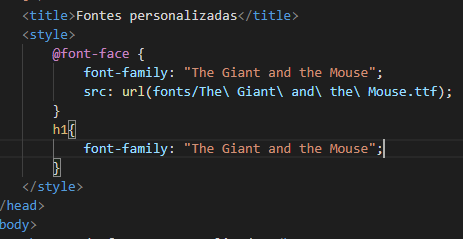

Para usar fontes personalizadas é preciso seguir o passo a passo abaixo:
A codificação tem que ficar como esta: 
Este é o resultado que o usuário vai ver quando abrir o site no navegador.
Código para folha de estilo com fonte personalizada e caixas de texto
@charset "UTF-8";
@font-face {
font-family: "The Giant and the Mouse";
src: url(fonts/The\ Giant\ and\ the\ Mouse.ttf);
font-size: 36px;
min-height: 100%;
}
body{
background-image: linear-gradient(to right,rgb(114, 67, 245), rgb(137, 247, 247) ) ;
}
p{
background-color: bisque;
border-radius: 10px ;
box-shadow:5px 5px 15px black;
width: 600px;
padding: auto;
font-family: Arial, Helvetica, sans-serif;
font-size: 18px;
text-align: center;
}
h1{
font-family: "The Giant and the Mouse";
font-size: 48px;
color: yellow;
text-align: center;
text-shadow: 1px 1px 2px rgb(12, 10, 10);
}
h2{
font-family: Arial, Helvetica, sans-serif;
font-size: 24px;
color: ivory;
text-shadow:1px 1px 2px rgb(12, 10, 10);
}
ol{
font-family: Arial, Helvetica, sans-serif;
font-size: 18px;
color: black;
}
Para capturar fontes de sites utlilize a extensão fonts-ninja no Google Chrome. Esta extensão não somente captura as fontes como também as cores delas. Para usar a fonte que foi encontrada pelo fonts-ninja abra o site Google fonts e cole o nome da fonte e faça o download. Para aplicar ao site basta seguir o passo a passo explicado nesta página.